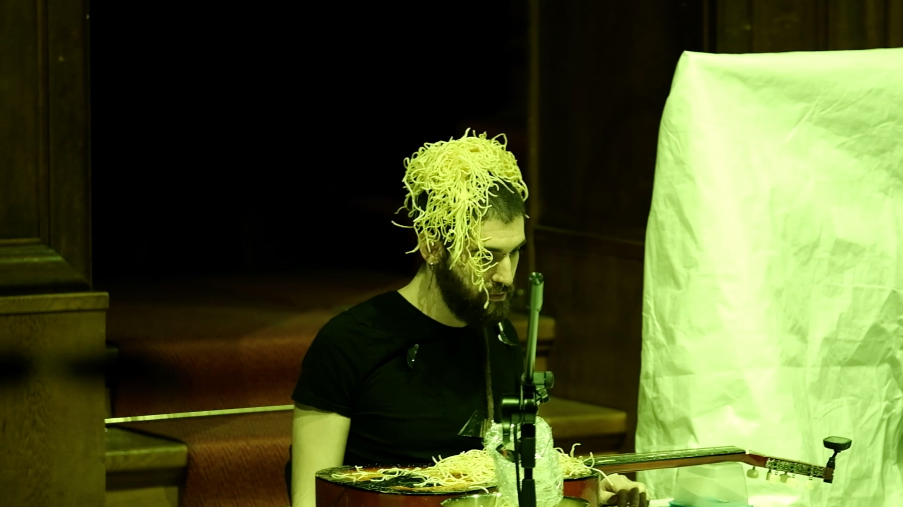
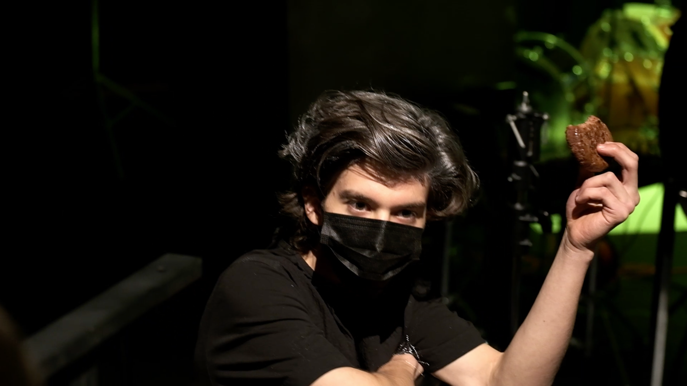
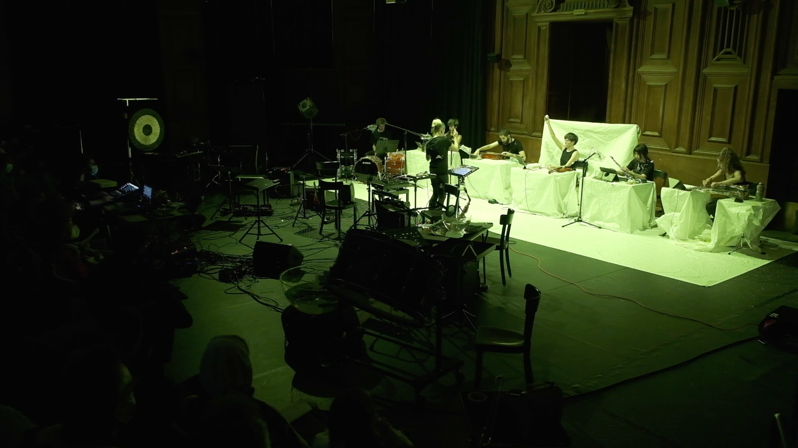

sad at dinner lol
combines food and instruments to address the tension between sound-actions and instrumental playing



sad at dinner lol
is on the one hand an absurd expression of food-based excess. Each instrument is paired with a food; the ensemble forms a spaghetti carbonara. The humor is paired with brutality: the repeated smashing of eggs on the violin is almost painful to watch. Over the course of the work, the instruments become "broken" through their interactions with food.
On the other hand, the piece is a study in temporality of the material. Each instrument's material consists of sound-actions generated from their corresponding food item. The sound actions are conceived for their acoustic qualities, yet their being actions creates a resistance to metric, musical time.
To address the question of how to resolve performative material with instrumental playing, sound actions with various temporalities are embedded in a metric grid.
In the end, these sound-actions that strain against musical time result in a dissolution of the music work.